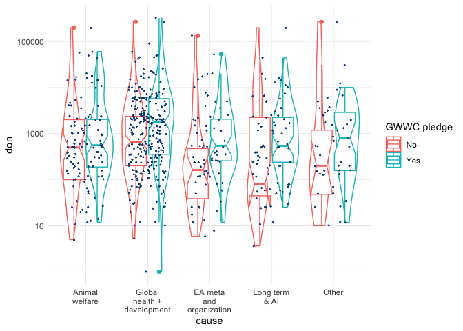
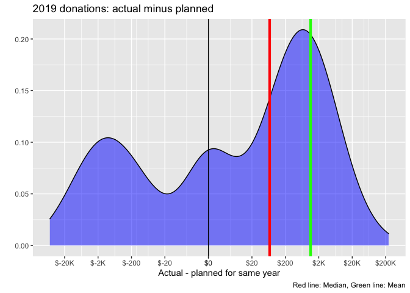
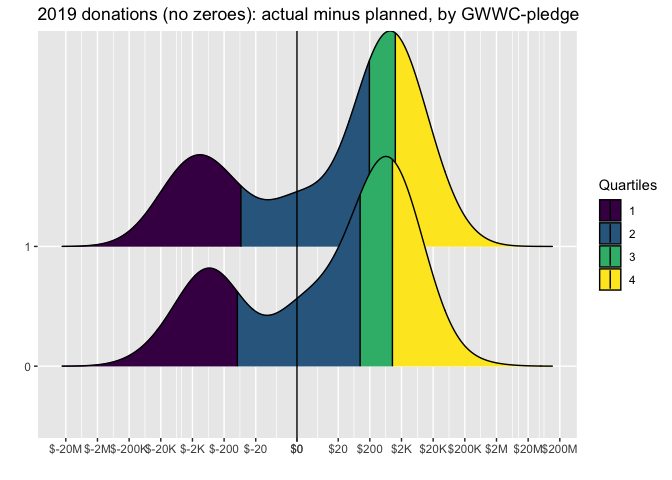

4 Cause Prioritisation
Cause prioritisation (repeat descriptives from last year, ask Kim for R code if necessary) LINK
4.1 Likert scale responses - all responses
p_load(likert)lik_priority_eas20 <- eas_20 %>%
dplyr::select(
starts_with("prioritize", ignore.case = FALSE), engagement_num,
-prioritize_other
) %>%
rename(
"AI risk"=prioritize_ai_risks,
"Animal welfare"=prioritize_animal_welfare,
"Biosecurity and pandemic preparedness"=prioritize_biosecurity,
"Broad longtermism"=prioritize_broad_longtermism,
"Cause prioritization"=prioritize_causes,
"Climate change"=prioritize_climate_change,
"EA movement building"=prioritize_ea_movement,
"Global poverty"=prioritize_global_poverty,
"Mental health"=prioritize_mental_health,
"Meta (Other than EA movement building)"=prioritize_meta,
"Nuclear security"=prioritize_nuclear_security,
"Existential risks"=prioritize_x_risks
)
title <- "Cause Prioritization EA Survey 2020"
(
priority_ordered_bar <- lik_priority_eas20 %>%
as.data.frame() %>%
select(-engagement_num) %>%
likert() %>%
plot(.,
type="bar") +
ggtitle(title)
)
(
priority_unordered_bar <-
lik_priority_eas20 %>%
as.data.frame() %>%
select(-engagement_num) %>%
likert() %>%
plot(.,
type="bar", ordered=FALSE,
group.order=c(
"AI risk",
"Animal welfare",
"Biosecurity and pandemic preparedness",
"Broad longtermism",
"Cause prioritization",
"Climate change",
"EA movement building",
"Global poverty",
"Mental health",
"Meta (Other than EA movement building)",
"Nuclear security",
"Existential risks"
)) +
ggtitle(title)
)
## Likert scale responses - highly engaged
Comparing the cause priorities of more and less engaged EA’s:
title <- "Cause Prioritization of Highly Engaged EAs"
(
priority_ordered_bar_eng <- lik_priority_eas20 %>%
filter(engagement_num==5) %>%
select(-engagement_num) %>%
as.data.frame() %>%
likert() %>%
plot(type="bar") +
ggtitle(title)
)
(
priority_unordered_bar_eng <- lik_priority_eas20 %>%
as.data.frame() %>%
filter(engagement_num==5) %>%
select(-engagement_num) %>%
likert() %>%
plot(.,
type="bar", ordered=FALSE,
group.order=c(
"AI risk",
"Animal welfare",
"Biosecurity and pandemic preparedness",
"Broad longtermism",
"Cause prioritization",
"Climate change",
"EA movement building",
"Global poverty",
"Mental health",
"Meta (Other than EA movement building)",
"Nuclear security",
"Existential risks"
))
)
(
priority_by_eng <- ggarrange(priority_unordered_bar , priority_unordered_bar_eng ,
ncol = 1, nrow = 2,
heights = c(1, 1),
align = "v",
common.legend = TRUE, legend = "bottom")
)
Cause prioritisation differences across groups
Changes in cause selection across years (needs joined multi-year data eas_all)
Predictors of cause prioritisation
Moss: This is what we did last year… but open to other approaches. In particular, I think we can drop the binary ‘top cause’ selection
Ordinal regression of full scale
Binary logistic regression of ‘top cause’ selection
Multiple Correspondence Analysis
4.2 Factor analysis: grouping of prioritization
(Filter out cases with all priority responses missng)
priority_slice <- eas_20 %>%
select(names_priority_cat) %>%
mutate_if(is.factor, as.numeric) %>%
filter_all(any_vars(!is.na(.)))
priority_fac <- priority_slice %>%
jmv::efa(
data = .,
vars = vars(prioritize_animal_welfare, prioritize_causes, prioritize_climate_change, prioritize_biosecurity, prioritize_nuclear_security, prioritize_ai_risks, prioritize_mental_health, prioritize_global_poverty, prioritize_meta, prioritize_ea_movement, prioritize_x_risks, prioritize_broad_longtermism),
#I tried a long time to use tidyselect here but I couldn't get it to work
extraction = "ml",
rotation = "promax",
sortLoadings = TRUE,
factorCor = TRUE,
factorSummary = TRUE,
modelFit = TRUE)
priority_fac##
## EXPLORATORY FACTOR ANALYSIS
##
## Factor Loadings
## ──────────────────────────────────────────────────────────────────────
## 1 2 3 Uniqueness
## ──────────────────────────────────────────────────────────────────────
## prioritize_biosecurity 0.72 0.52
## prioritize_x_risks 0.65 0.54
## prioritize_ai_risks 0.63 0.45
## prioritize_nuclear_security 0.59 0.65
## prioritize_meta 0.75 0.48
## prioritize_ea_movement 0.69 0.60
## prioritize_causes 0.57 0.62
## prioritize_broad_longtermism 0.37 0.68
## prioritize_global_poverty 0.62 0.51
## prioritize_mental_health 0.58 0.66
## prioritize_climate_change 0.54 0.64
## prioritize_animal_welfare 0.42 0.81
## ──────────────────────────────────────────────────────────────────────
## Note. 'Maximum likelihood' extraction method was used in
## combination with a 'promax' rotation
##
##
## FACTOR STATISTICS
##
## Summary
## ──────────────────────────────────────────────────────────
## Factor SS Loadings % of Variance Cumulative %
## ──────────────────────────────────────────────────────────
## 1 1.8 15 15
## 2 1.7 14 29
## 3 1.3 11 40
## ──────────────────────────────────────────────────────────
##
##
## Correlation Matrix
## ─────────────────────────────
## 1 2 3
## ─────────────────────────────
## 1 — 0.63 0.0084
## 2 — -0.2078
## 3 —
## ─────────────────────────────
##
##
## MODEL FIT
##
## Model Fit Measures
## ────────────────────────────────────────────────────────────────
## RMSEA Lower Upper TLI BIC χ² df p
## ────────────────────────────────────────────────────────────────
## 0.049 0.038 0.061 0.94 -125 96 33 < .01
## ────────────────────────────────────────────────────────────────Replicating the above without jmv, following Hawaii guide
p_load(psych)We should take a look at the correlations among our variables to determine if factor analysis is appropriate. We expect at least some of these to differ from zero. Also, if there are any correlations that are unexpectedly very high in magnitude, such as close to 1 or -1, the two variables may be too collinear, indicating that they are potentially redundant and that we may seek to remove one or combine them.
psa <- priority_slice %>%
dplyr::rename_all(gsub, pattern = 'prioritize_', replacement = '') %>%
dplyr::rename_all(gsub, pattern = 'change', replacement = '') %>%
dplyr::rename_all(gsub, pattern = 'broad_longtermism', replacement = 'br_LT') %>%
dplyr::rename_all(gsub, pattern = 'nuclear_security', replacement = 'nuke') %>%
dplyr::rename_all(gsub, pattern = 'nuclear_security', replacement = 'pov') %>%
dplyr::rename_all(gsub, pattern = 'biosecurity', replacement = 'bio') %>%
dplyr::rename_all(gsub, pattern = 'movement', replacement = 'mvmt') %>%
dplyr::rename_all(gsub, pattern = 'mental_health', replacement = 'mental')
psa %>%
cor(use="pairwise.complete.obs") %>%
round(2)## animal_welfare causes climate_ bio nuke ai_risks mental
## animal_welfare 1.00 0.12 0.10 0.08 0.13 0.03 0.21
## causes 0.12 1.00 -0.13 0.21 0.11 0.27 0.06
## climate_ 0.10 -0.13 1.00 0.13 0.17 -0.18 0.30
## bio 0.08 0.21 0.13 1.00 0.45 0.37 0.14
## nuke 0.13 0.11 0.17 0.45 1.00 0.31 0.15
## ai_risks 0.03 0.27 -0.18 0.37 0.31 1.00 -0.02
## mental 0.21 0.06 0.30 0.14 0.15 -0.02 1.00
## global_poverty 0.14 -0.18 0.37 -0.03 0.03 -0.35 0.26
## meta 0.08 0.42 -0.13 0.17 0.14 0.29 0.07
## ea_mvmt 0.13 0.37 -0.15 0.13 0.08 0.22 0.04
## x_risks 0.04 0.24 0.00 0.39 0.34 0.42 0.07
## br_LT 0.03 0.30 -0.08 0.22 0.19 0.29 0.02
## global_poverty meta ea_mvmt x_risks br_LT
## animal_welfare 0.14 0.08 0.13 0.04 0.03
## causes -0.18 0.42 0.37 0.24 0.30
## climate_ 0.37 -0.13 -0.15 0.00 -0.08
## bio -0.03 0.17 0.13 0.39 0.22
## nuke 0.03 0.14 0.08 0.34 0.19
## ai_risks -0.35 0.29 0.22 0.42 0.29
## mental 0.26 0.07 0.04 0.07 0.02
## global_poverty 1.00 -0.23 -0.14 -0.08 -0.20
## meta -0.23 1.00 0.46 0.24 0.38
## ea_mvmt -0.14 0.46 1.00 0.17 0.24
## x_risks -0.08 0.24 0.17 1.00 0.38
## br_LT -0.20 0.38 0.24 0.38 1.00library(corrr)
prior_cor <- psa %>%
correlate(use="pairwise.complete.obs")
prior_cor_arr <- prior_cor %>%
rearrange() %>%
shave()
prior_cor_gt10 <- prior_cor %>%
mutate_all( funs(ifelse(.<0.1 & .>0, NA, .)) ) %>%
mutate_all( funs(ifelse(.>-0.1 & .<0, NA, .)) ) %>%
janitor::remove_empty(which = "cols")
(
prior_cor_fmt <- prior_cor_arr %>%
fashion()
)| term | ai_risks | meta | br_LT | causes | ea_mvmt | x_risks | bio | nuke | animal_welfare | mental | climate_ | global_poverty |
|---|---|---|---|---|---|---|---|---|---|---|---|---|
| ai_risks | ||||||||||||
| meta | .29 | |||||||||||
| br_LT | .29 | .38 | ||||||||||
| causes | .27 | .42 | .30 | |||||||||
| ea_mvmt | .22 | .46 | .24 | .37 | ||||||||
| x_risks | .42 | .24 | .38 | .24 | .17 | |||||||
| bio | .37 | .17 | .22 | .21 | .13 | .39 | ||||||
| nuke | .31 | .14 | .19 | .11 | .08 | .34 | .45 | |||||
| animal_welfare | .03 | .08 | .03 | .12 | .13 | .04 | .08 | .13 | ||||
| mental | -.02 | .07 | .02 | .06 | .04 | .07 | .14 | .15 | .21 | |||
| climate_ | -.18 | -.13 | -.08 | -.13 | -.15 | .00 | .13 | .17 | .10 | .30 | ||
| global_poverty | -.35 | -.23 | -.20 | -.18 | -.14 | -.08 | -.03 | .03 | .14 | .26 | .37 |
axes <- theme(axis.text.x = element_text(angle = 90, vjust = 0.5, hjust=1),
panel.grid.major = element_line(colour = "gray"))
rplot_f <- function(df) {
{{df}} %>%
rplot(shape = 15, colours = c("red", "green"), print_cor = TRUE)
}
(
pr_corr_plot <- prior_cor %>%
shave() %>%
rplot_f + axes
)
(
prior_cor_plot_arr <- prior_cor_arr %>%
rplot_f + axes
)
(
prior_corr_plot_arr_gt10 <- prior_cor_gt10 %>%
rplot_f + axes
)
The assumption is that the correlations among the observed variables and factors are linear. Non-linear relationships can result in misspecified correlations and therefore a misspecified factor-analysis model.
(Ignore because this doesn’t make work with our 5-value outcomes; but note lack of continuity may be an issue for the factor analysis)
library(GGally)
ggpairs(psa)
“Multivariate outliers?”
outLiars <- psych::outlier(psa)
We seem to have a couple … but what does it mean in this context?
Check share missing
round((sum(is.na(as.matrix(psa))) / length(as.matrix(psa))) * 100, 2)## [1] 11we should consider imputation methods
Factorability?
KMO(psa)## Kaiser-Meyer-Olkin factor adequacy
## Call: KMO(r = psa)
## Overall MSA = 0.78
## MSA for each item =
## animal_welfare causes climate_ bio
## 0.71 0.85 0.70 0.79
## nuke ai_risks mental global_poverty
## 0.77 0.80 0.70 0.72
## meta ea_mvmt x_risks br_LT
## 0.78 0.78 0.81 0.83Not sure what this means, but the cookbook says “KMO >0.6” so “we can probably conduct a factor analysis.”
det(cor(psa, use="pairwise.complete.obs"))## [1] 0.099We have a positive determinant, which means the factor analysis will probably run.
Assign the above loadings to each obs to define factors